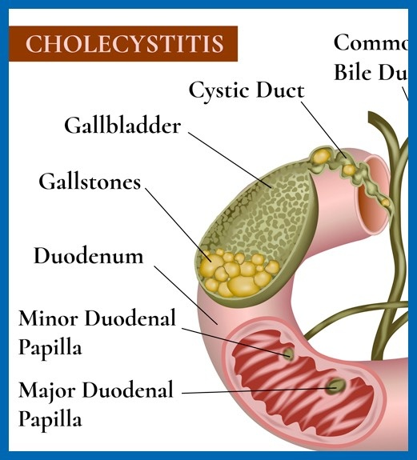

Cholecystitis

SYMPTOMS:
Signs and symptoms of cholecystitis may include:
- Severe pain in your upper right or center abdomen
-
Pain that spreads to your right shoulder or back
-
Tenderness over your abdomen when it's touched
-
Nausea
-
Vomiting
-
Fever
CAUSES
Cholecystitis occurs when your gallbladder becomes inflamed. Gallbladder inflammation can be caused by:
- Gallstones. Most often, cholecystitis is the result of hard particles that develop in your gallbladder (gallstones). Gallstones can block the tube (cystic duct) through which bile flows when it leaves the gallbladder. Bile builds up, causing inflammation.
Tumor. A tumor may prevent bile from draining out of your gallbladder properly, causing bile buildup that can lead to cholecystitis.
-
Bile duct blockage. Kinking or scarring of the bile ducts can cause blockages that lead to cholecystitis.
Infection. AIDS and certain viral infections can trigger gallbladder inflammation.
-
Blood vessel problems. A very severe illness can damage blood vessels and decrease blood flow to the gallbladder, leading to cholecystitis.
DIAGNOSIS:
- Blood tests. Your doctor may order blood tests to look for signs of an infection or signs of gallbladder problems.
-
Imaging tests that show your gallbladder. Abdominal ultrasound, endoscopic ultrasound, or a computerized tomography (CT) scan can be used to create pictures of your gallbladder that may reveal signs of cholecystitis or stones in the bile ducts and gallbladder.
-
A scan that shows the movement of bile through your body. A hepatobiliary iminodiacetic acid (HIDA) scan tracks the production and flow of bile from your liver to your small intestine and shows blockage. A HIDA scan involves injecting a radioactive dye into your body, which attaches to bile-producing cells so that it can be seen as it travels with the bile through the bile ducts.
TREATMENT
Treatment for cholecystitis usually involves a hospital stay to control the inflammation in your gallbladder. Sometimes, surgery is needed.
At the hospital, your doctor will work to control your signs and symptoms. Treatments may include:
- Fasting. You may not be allowed to eat or drink at first in order to take stress off your inflamed gallbladder.
-
Fluids through a vein in your arm. This treatment helps prevent dehydration.
-
Antibiotics to fight infection. If your gallbladder is infected, your doctor likely will recommend antibiotics.
Pain medications. These can help control pain until the inflammation in your gallbladder is relieved.
-
Procedure to remove stones. Your doctor may perform a procedure called endoscopic retrograde cholangiopancreatography (ERCP) to remove any stones blocking the bile ducts or cystic duct.